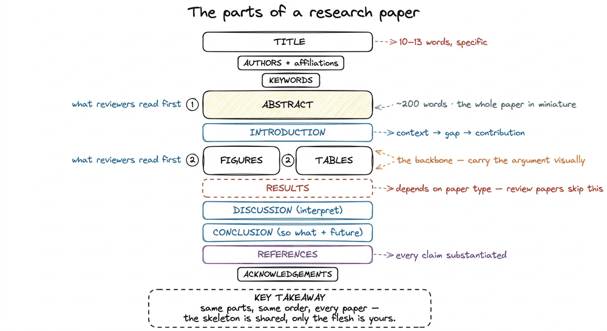
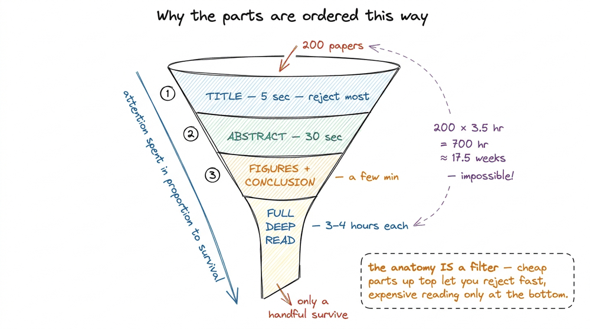
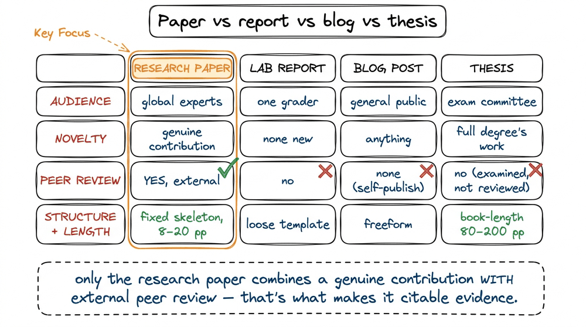
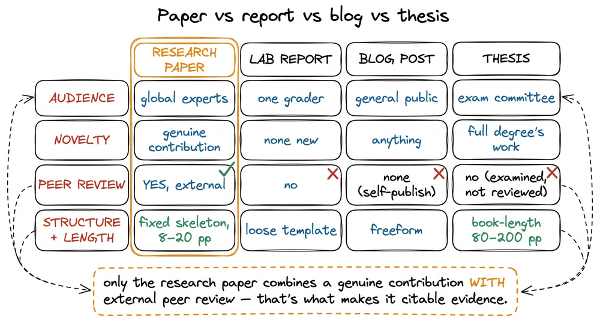

What Is a Research Paper?
In the last chapter I argued that a research profile is worth building — that a tangible research outcome moves admissions committees and hiring panels in a way a grade sheet never will. But I left a word undefined, and it is the load-bearing one: paper . When people say "write a paper," what exactly is the artifact they mean? Not a blog post you dash off on a Sunday. Not the lab report you turned in for a grade. Not the 120-page thesis your senior spent a year on. A research paper is a specific, tightly-structured object with rules, an audience, and a job to do — and until you can see its skeleton clearly, every piece of advice in this book will feel like it is floating.
So let me do the unglamorous thing and define it precisely, build up its anatomy piece by piece, and then hold it side by side with the three things it is most often confused with. By the end you will be able to open any PDF from a journal and name every part on sight.
The one-sentence definition, and why each word matters
A research paper — also called a research article — is a written document that presents findings from your own original research , structured so that another expert can evaluate and build on it.
Read that sentence slowly, because three phrases carry the whole meaning. 1 1 The course draws a sharp line here between a research paper (original findings — experiments, simulations, or modeling that you did) and a review paper (a systematic synthesis of a field, with no new experiment). The next chapter, what is a review paper , is entirely about the second kind — and it is the one this book recommends you write first. "Original research" means you produced something new — an experiment in a physical lab, a simulation, or a piece of modeling — not a summary of what others found. "Structured" means the document is not free-form; it follows a shared skeleton that every reader in the field already has in their head. And "so another expert can evaluate and build on it" is the purpose clause: a paper exists to be checked and reused , which is why it must be reproducible, cited, and precise in a way a blog post never has to be.
That purpose is the thing to hold onto. A paper is a unit of verifiable knowledge, written for a skeptical peer, not for a casual reader.
The anatomy: a paper is a fixed set of parts in a fixed order
Here is what makes papers tractable to write and to read: they are not blank canvases. Every research paper is assembled from the same short list of named parts, in roughly the same order. Learn the list once and you can navigate any paper in your field.
The canonical parts are: Title , Authors , Keywords , Abstract , Introduction , Figures , Tables , Results , Discussion , Conclusion , References , and Acknowledgements . 2 2 The Results section is the one part that depends on the paper type. A review paper usually has no separate Results section — its main body is the synthesis of the field. A research paper reporting an experiment always does. So the list above is "the full menu"; not every paper orders every dish.

Every research paper is assembled from the same named parts in the same order. The Results section is the only one that depends on paper type; a review paper's body replaces it.
Notice the shape of this. The Title , Authors , and Keywords are the labels on the outside of the box. The Abstract is a ~200-word miniature of the entire paper — a reader decides in thirty seconds whether to keep going. 3 3 This is not a stylistic nicety; it is how the literature is actually consumed. Most papers are read in what we later call bird's-eye mode — abstract, figures, tables, conclusion — and never in full. Your abstract and figures do most of the work of getting cited. We build the initial abstract in writing an initial abstract . The Introduction sets up the problem. Figures and Tables carry the evidence — they are, as a later chapter puts it, the backbone of papers . Discussion and Conclusion interpret what it all means. And References are not decoration: they are the mechanism by which every claim is anchored to prior work. The guiding principle we return to again and again is blunt — Citation = Substantiation . If you assert it, you cite it.
To feel how much weight that principle carries, look at the References section with real numbers. A solid review paper does not carry a handful of citations; it carries 60 to 80 references, and often 150 or more . That is not padding. It is the load-bearing floor under every sentence in the body: each claim you make ("this method converges faster," "this failure mode is well known") points down to a reference that has already been checked by the field. So the reference count is really a proxy for how much reading you did. If you plan to cite roughly 70 papers, that is close to 70 papers you read, most of them in bird's-eye mode (abstract, figures, conclusion) and a handful in full. Beginners routinely underestimate this. They write a confident paragraph, then discover they have nothing to point it at, because they read ten papers and tried to cite thirty. The fix is not to write more carefully. It is to read more first, which is exactly why this book spends its entire middle third on the literature before you draft a single body paragraph.

Every claim in the body rests on a citation, so a review paper's 60-to-80-reference floor is really a record of how much you read. Read first, write second.
A concrete pass: reading a paper the way its parts intend
Definitions stay abstract until you walk one. So picture a real paper — say, a review of physics-informed neural networks — and watch how the parts do their jobs in sequence, because the order is not arbitrary.
You land on the Title : about a dozen words, specific enough that you know instantly whether this is your topic. Say it is 11 words long. 4 4 The course's rule for a title is 10–13 words — long enough to be specific, short enough to scan. We spend a whole project chapter on it later, crafting your title , because a vague title is the difference between being found and being invisible in a search result. You read the Abstract — 200 words, four moves: here is the technology, here is why it matters, here is what this review covers, here are the other details inside. Thirty seconds in, you know the paper's whole shape.
Now do a little napkin arithmetic, because it explains why the parts are ordered the way they are. Suppose you are building your own literature review and you have found 200 candidate papers. Reading every one in depth — printing it, highlighting it, understanding it completely — takes roughly 3 to 4 hours apiece.
200 papers × 3.5 hours = 700 hours ≈ 17.5 full-time weeks.
Nobody has 700 hours. So the anatomy is a filter : you read the Title (5 seconds) to reject most candidates, the Abstract (30 seconds) to reject more, then the Figures and Conclusion (a few minutes) to decide the survivors. Only a handful reach the full 3-to-4-hour deep read. The parts of a paper exist precisely so a reader can spend their attention proportionally.

The ordering of a paper's parts is a triage funnel: cheap-to-read parts at the top let a reader reject candidates fast, so the expensive 3–4 hour deep read is spent only on the few that survive.
That single insight — that a paper's structure is a triage device for a reader drowning in literature — is the reason the rest of this book obsesses over titles, abstracts, and figures. They are the parts most people actually read.
How a paper differs from a report, a blog post, and a thesis
Now the comparison that trips up almost every beginner. The word "paper" gets used loosely, so let me pin it against the three lookalikes. The differences come down to four axes: audience , novelty , review , and structure .
A lab report is written for one grader, presents no new knowledge to the world, is not peer-reviewed, and follows a loose template. Its purpose is to prove you learned something. A research paper is written for the global expert community, must present a genuine contribution, survives external peer review, and follows the rigid shared skeleton above. Its purpose is to add something to the field.
A blog post is written for a general audience, can be about anything, has no gatekeeper beyond you clicking publish, and has whatever structure you like. It is a wonderful thing — but a claim in a blog post carries no external warrant. A research paper's claims are checked by anonymous experts before the world sees them: this is the weight of peer review , where an editor sends your paper to expert reviewers who recommend accept, minor revision, major revision, or reject. That external scrutiny is exactly what a blog post lacks and what makes a paper citable evidence rather than an opinion . We cover the full process in what is peer review .
A thesis (or dissertation) is the closest relative and the easiest to conflate — but it differs in scale and scope , not kind. A thesis is a book-length document, often 80 to 200 pages, that reports the entirety of a multi-year degree, written primarily to be examined by a small committee. A paper is a tight, single-contribution slice — typically 8 to 20 pages — extracted from that same body of work and aimed at the whole field. A useful mental model: several papers can be carved out of one thesis, but a thesis is never a substitute for a paper, because it was never subjected to journal peer review or distilled to one crisp contribution.

The four artifacts differ on audience, novelty, peer review, and structure. Only the research paper pairs a genuine contribution with external peer review, which is what makes its claims citable.
The single distinguishing feature, if you must remember one, is the green check in that table: external peer review of a genuine contribution. A report lacks the contribution. A blog lacks the review. A thesis has both in spirit but was examined, not journal-reviewed, and was never distilled to one clean claim. The research paper is the only artifact that has all of it at once — and that is precisely why a paper on your profile carries weight the other three cannot.
An honest scope note
Let me be straight about the thing beginners most want a promise on. Writing a paper does not guarantee publication. 5 5 This is worth internalizing early so you are not crushed later: after your paper is ready , publication is a separate months-long journey through submission, peer review, revision, and often rejection-then-resubmission. The course budgets about 12 weeks just to produce a first review paper — and more beyond that to place it. Rejection is normal; you revise and resubmit elsewhere. The paper is the artifact; publication is a process that happens to the artifact afterward, and it can take months and several attempts. This book teaches you to produce a submission-ready paper — a real, structured, cited contribution. Getting it into a journal is a later, separate campaign we cover in the final section, starting with choosing the right journal .
So the key thing to carry forward is this: a research paper is not a genre of writing — it is a fixed-anatomy unit of peer-reviewed, original knowledge, structured as a triage funnel for a reader who has no time. Every chapter after this one is really about filling in one part of that anatomy well.
And there is a shortcut hiding in this definition. If the hard, resource-heavy thing about a research paper is the "original experiment" clause — the lab, the funding, the team — then the natural first move is to write the one kind of legitimate paper that needs none of that: a review paper. That is exactly where we go next, in what is a review paper .